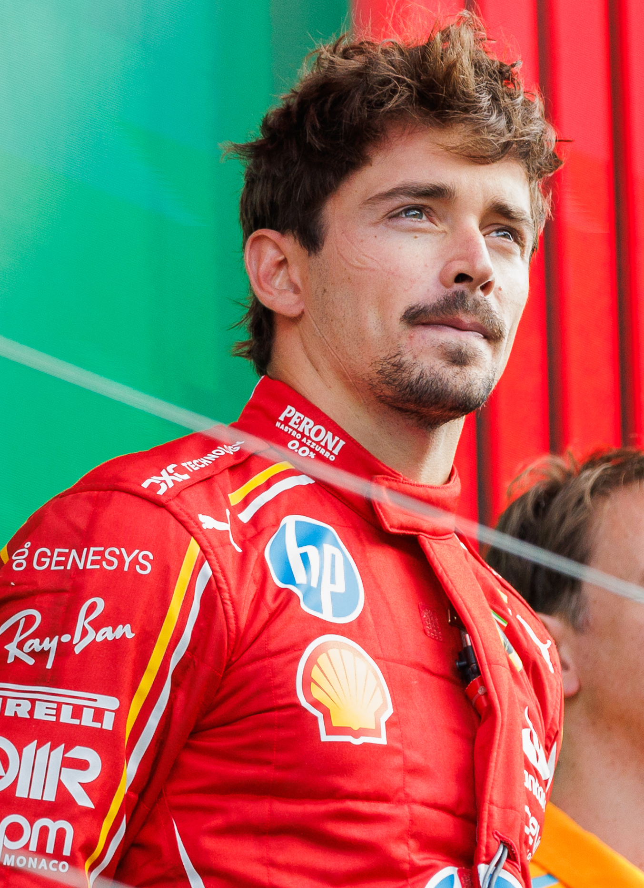

Here Are Your Results
Based on your answers, you are most like...
Charles Leclerc
- You are thoughtful, determined, and funny.
- You care deeply about the people around you, but sometimes you put a lot of pressure on yourself to be perfect.
- You are competitive and hardworking, but underneath you are warm and kind.
- You struggle sometimes, but you always perservere.
- Your favorite things are:
- Ice Cream
- Black Tea
- Classical Music(especially piano)
- The color blue
- You have emotional attachment to specific pieces of clothing and you wear them everywhere.

Here is some more information about Charles Leclerc!
Take the quiz again!